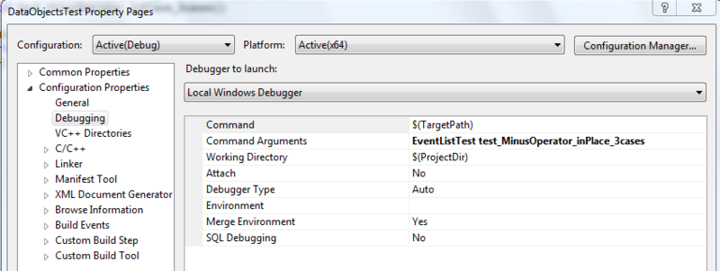
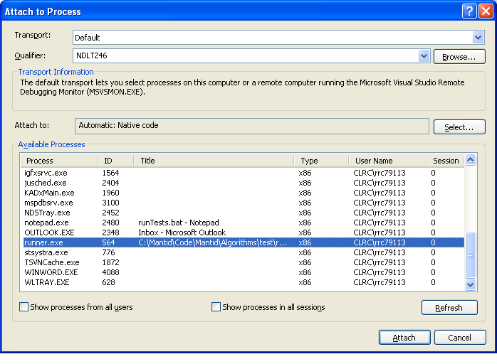

Debugging Unit Tests#
Using gdb#
Debugging typically requires the test executable to be run directly,
rather than via ctest (which typically spawns off a separate process to
run the actual tests). So an example of debugging test function
testworkspace1D_dist of Suite RebinTest from the command line
using gdb would be:
$ gdb bin/AlgorithmsTest
(gdb) r RebinTest testworkspace1D_dist
If you do need to run ctest in order to debug - if, for example, a test is failing when run in ctest, but not if run directly - then you can start the test off and then attach to the actual test executable from another terminal (or your IDE). You may need to pause or slow down the test using, e.g., the method described for Visual Studio debugging below.
If the issue is with a python unit test, the call is slightly more complicated:
$ env PYTHONPATH=$PWD/bin gdb --args python /full/path/to/mantid/Framework/PythonInterface/test/python/mantid/kernel/TimeSeriesPropertyTest.py
(gdb) run
Within Eclipse#
Go to Run->Debug Configurations
Create a new Debug Configuration. I called mine “DataHandling Test Debug”.
For me, it worked best using the “Standard Create Process Launcher” (bottom option on the “Main” tab)
Set the C/C++ application to the path to the test executable, e.g. bin/DataHandlingTest
Under the “Arguments” tab, add the name of the test class you want to debug under “Program arguments”, e.g. LoadTest
To only run one test in a class, you can add the particular test to run, e.g. “LoadTest test_exec”
Under “Common” you can put the debug config in your “favorites” menu.
You can then run the debugger on this configuration from the Run menu or the toolbar.
Within Visual Studio (debugging run method)#
I’ve found that this method works with Visual Studio Express (which does not allow “attach to process”).
Right-click the test project, e.g. DataObjectsTest.
Select Properties.
Under Debugging -> Command Arguments, type in the test suite and, optionally, single test name. e.g. “EventListTest test_MinusOperator_inPlace_3cases” in the screenshot below.

VisualStudioTestDebugProperties.png#
Put a break point somewhere in the test code that will be run.
Select the project and click Debug -> Start Debugging.
Fun test debugging times!
Within Visual Studio (attach to process version)#
The process here is not as straight forward as it is in eclipse. It involves a few steps, but it does work!
1. Edit the test to add a pause at the start of the test you are interested in. This will make the test wait for keyboard input, all you need to do is hit enter, but you can use this delay to attach to the debugger to running process.
std::string s;
std::getline(std::cin, s);
